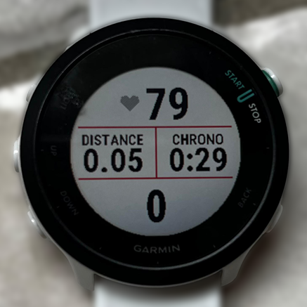
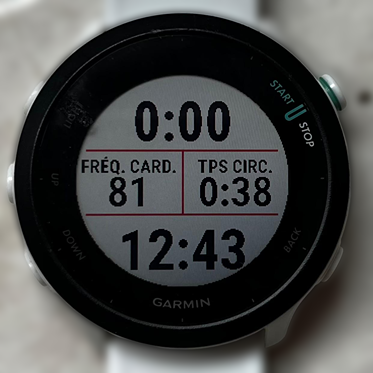
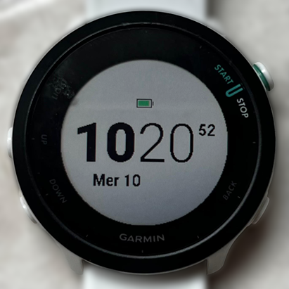

ASC Balan · Stage des entraîneurs
Courir mieux,
longtemps,
sans se blesser
Les bonnes pratiques du coureur · Florian
Plus d’infos sur guide.balan-running.fr
Ouverture
Les entraîneurs : demandez-leur un plan

Jean-Jacques
Entraîneur

Lionel
Entraîneur

Laurent
Entraîneur

Frédéric
Entraîneur

Vincent
En formation

Florian
En formation
Un plan personnalisé, un doute sur une douleur, une course à préparer : il suffit de demander.
2 / 73
Ouverture
Ma progression : −20 minutes au semi en 3 ans
1:43:53
Annecy 2023
1:37:45
Bourg 2024
1:31:58
Dole 2024
1:29:10
Bourg 2025
1:27:36
Dole 2025
1:23:48
Bourg 2026
1:20:00
Bourg 2027
≈ +1 km/h par an
au semi : de 12,2 à 15,1 km/h
3 / 73
Ouverture
Aujourd’hui, 4 règles d’or
1
Lent, souvent
L’essentiel du volume en endurance fondamentale, piloté au cœur.
2
Progressif, toujours
Un seul levier à la fois, petit à petit.
3
Le repos fait progresser
Sommeil, semaines allégées, vraie récupération.
4
Écouter son corps
Une douleur qui revient, c’est un message : on adapte.
4 / 73
Les repères
VMA, fréquence cardiaque, ressenti
5 / 73
Repères
La VMA : un outil pour caler ses allures
C’est quoi ?
La vitesse à VO2max, tenable environ 6 minutes.
À quoi ça sert ?
Caler les allures du fractionné, surtout le mardi.
Comment la connaître ?
Le test VAMEVAL au club, 2 fois par an.
Mon exemple
VMA
+3 %
17,3 → 17,8 km/h
Semi
+10 %
13,8 → 15,1 km/h (1:31:58 → 1:23:48)
D’octobre 2024 à mars 2026
Un outil pour les allures, pas un objectif.
6 / 73
Repères
La FC max et min : les vôtres, pas une formule
220 − âge
Une moyenne de population. D’un coureur à l’autre, l’écart peut dépasser 10 à 20 battements.
Pour vos zones, il faut 2 chiffres
1 · Votre FC max, mesurée
En fin de test VMA, ou sur une séance intense en côte.
2 · Votre FC de repos
Le matin au réveil, avant de se lever.
7 / 73
Repères
5 zones, calculées sur la FC de réserve
FC cible = FC repos + % × (FC max − FC repos)
Ex. 70 % : 55 + 0,7 × 130 = 146 bpm
| Zone | % FCR | Exemple (bpm) | Pour quoi |
|---|---|---|---|
| Z1 | 50 à 60 % | 120 à 133 | Récupération, échauffement |
| Z2 | 60 à 70 % | 133 à 146 | Endurance fondamentale |
| Z3 | 70 à 80 % | 146 à 159 | Endurance active |
| Z4 | 80 à 90 % | 159 à 172 | Seuil |
| Z5 | 90 à 100 % | 172 à 185 | VMA, fractionné court |
Exemple pour une FC max de 185 et une FC de repos de 55. À régler dans la montre : zones « en % de la FC de réserve ».
8 / 73
Repères
Le ressenti : rarement au-delà de 7,5 sur 10
1
2
3
4
5
6
7
8
9
10
1 à 7 : là où se fait l’essentiel de la progression.
8 à 10 : rare. Le jour de la course, pas tous les mardis.
Le but : enchaîner les semaines, pas finir vidé.
9 / 73
Repères · Motivation
Pourquoi
courez-vous ?
Gardez la ou les réponses en tête : ce sont elles qui vous feront sortir les jours sans motivation.
La santé
Le plaisir
Décompresser
Le groupe
Un chrono
Un défi
10 / 73
Les séances
Chacune a un rôle, l’EF d’abord
11 / 73
Séances
80 % lent, 20 % plus intense
80 %
Endurance fondamentale
20 %
Seuil, VMA, allure de course
Moi, sur les 12 derniers mois : 75 % du temps en zones 1 et 2 (68 % l’année d’avant).
Les athlètes d’endurance de haut niveau : environ 80 %.
12 / 73
Séances · Endurance fondamentale
L’EF, c’est lent.
Vraiment lent.
Zone 2
60 à 70 % de la FCR
On peut parler
sans être essoufflé
On peut respirer
par le nez
À l’arrivée
autant, voire plus d’énergie qu’au départ
13 / 73
Séances · Endurance fondamentale
L’EF est en zone 2. Le piège : la zone grise
L’EF est ici
Le piège
Z1
Z2
Z3
Z4
Z5
Récupération
50-60 % FCR
Endurance
60-70 % FCR
Zone grise
70-80 % FCR
Seuil
80-90 % FCR
VMA
90-100 % FCR
Z3 : trop vite pour récupérer, trop lent pour vraiment progresser.
14 / 73
Séances · Endurance fondamentale
Pourquoi courir aussi lentement ?
Un cœur plus efficace
Plus de sang à chaque battement.
Plus de capillaires
Plus d’oxygène livré aux muscles.
Brûler les graisses
Et garder le glycogène pour les efforts durs.
Récupérer plus vite
Entre les séances, et même entre les répétitions.
Moins de blessures
Moins de contraintes, et les tendons se renforcent doucement.
La base de la pyramide : plus elle est large, plus on monte haut.
15 / 73
Séances · Endurance fondamentale
Votre ego n’accepte pas une allure aussi lente ?
Masquez l’allure.
En EF, la montre affiche la FC en grand. L’allure, on la regarde après, si on veut.
16 / 73
Séances · Endurance fondamentale
Même cœur, 24 secondes au km plus vite

6:01
min/km, sept. 2024 à févr. 2025
5:37
min/km, sept. 2025 à août 2026
À FC moyenne quasi égale : 136 puis 134 bpm.
17 / 73
Séances · Endurance fondamentale
Comment ? Du volume en EF, augmenté sur deux ans

45 → 70
km par semaine en tendance, de sept. 2024 à sept. 2026
Avec quelques creux, mais beaucoup de régularité.
18 / 73
Séances · Fractionné court
Le fractionné court (mardi) en mode VMA
| Distance | % VMA | Travail | Allure | Chrono | Reps |
|---|---|---|---|---|---|
| 200 m | 105 % | 12 min | 3:49 | 46 s | x 15,8 |
| 300 m | 102 % | 14 min | 3:55 | 1 min 11 s | x 11,9 |
| 400 m | 100 % | 16 min | 4:00 | 1 min 36 s | x 10,0 |
| 500 m | 98 % | 18 min | 4:05 | 2 min 2 s | x 8,8 |
| 1000 m | 92 % | 24 min | 4:21 | 4 min 21 s | x 5,5 |
Exemple pour une VMA de 15 km/h. Vos chiffres : le calculateur du guide.
Le mardi au club
Environ 16 min d’effort, 5 km au maximum.
Déjà beaucoup forcé ? On peut s’arrêter à 4 km.
Fini les 5 km facilement ? Un peu plus vite la prochaine fois.
L’hiver au stade, au temps : même effort, pas même allure qu’en été. Et rester constant du début à la fin.
En prépa cross (conseil de Jean-Jacques) : s’efforcer de rattraper et doubler celui devant soi.
19 / 73
Séances · Au club
Le fractionné au club : on court ensemble
Un peu juste dans le groupe ?
Les premiers s’arrêtent à 300 m et vous êtes à 280 ou 290 m ? Coupez aussi. Vous gardez votre récup.
Le plus rapide du groupe ?
Partez 2 ou 3 s après le top et remontez le groupe, ou trottinez plus vite pendant la récup.
Mieux vaut 290 m en groupe que 300 m seul.
L’hiver au stade, au temps : les plus rapides prennent les virages à l’extérieur, les autres à la corde. Pendant la récup, on se rapproche du groupe.
20 / 73
Séances · Fractionné court
La VMA, surcotée ?
Pour beaucoup, ce n’est pas le facteur limitant. Et elle génère beaucoup de fatigue.

De moins en moins de VMA, de plus en plus de seuil.
Et c’est sur cette période que j’ai le plus progressé.
Un retour perso, pas une règle universelle.
21 / 73
Séances · Seuil
Le seuil : un état physiologique
Zone 4
80 à 90 % de la FCR
Ex. FC max 185, repos 55 : 159 à 172 bpm
Au cœur, pas au chrono
L’allure change avec la chaleur, le vent, le terrain, la fatigue. La FC, non.
Tenir vite, longtemps
La qualité qui compte du 10K au marathon. La zone la plus rentable pour la travailler.
Encore mieux : le sous-seuil
Le milieu de la zone 4. Presque le même bénéfice, et on en garde sous le pied pour la suivante.
C’est l’idée de la méthode norvégienne ou des Norwegian singles.
Exemples de séances sous le seuil
200 x20 @5K récup 30 s
1000 x7 @15K récup 1 min
2000 x4 @25K récup 1 min 30
3000 x3 @32K récup 2 min
@10K = à l’allure d’un 10K
22 / 73
Séances · Sortie longue
La sortie longue : longue, pas rapide
1/3
du volume de la semaine, au maximum
+15’
au maximum d’une semaine à l’autre
EF
la même allure qu’un footing, en plus long
Le moment idéal pour tester son ravitaillement : boisson, gels, chaussures, tenue.
En prépa spécifique : on peut y glisser des blocs à l’allure de course, par exemple 3 × 2 km allure semi ou 3 × 3 km allure marathon.
23 / 73
Séances · Renforcement
Le renfo : quelques minutes qui protègent
1 fois par semaine
ou 5 minutes par jour : c’est déjà suffisant.
Moi : surtout du gainage et des fessiers, un peu de tendon d’Achille.
Ce que ça apporte
Une foulée plus économe
Des muscles stabilisateurs plus solides
Moins de blessures
Un vieillissement musculaire ralenti
Des belles fesses et des beaux abdos 😉
On en reparle à 16h45 avec coach Baptiste.
24 / 73
Séances · Varier
Le trail, un bon complément pour les routiers
Moins d’impact
Sols souples, appuis qui varient.
De la force
Les montées travaillent les jambes, le terrain la stabilité.
Du plaisir
On oublie le chrono, on court au ressenti.
Attention aux descentes : elles tapent fort sur les cuisses. Là aussi, on y va progressivement.
25 / 73
Séances
Une semaine type à 5 séances
Lun
Repos
Mar
VMA courte
Club
Mer
EF courte
25 à 30 min
Jeu
Seuil ou spécifique
Club
Ven
Repos
Sam
EF
+ renfo
Dim
Sortie longue
en EF
2 séances intenses, 3 séances lentes : la règle des 80/20, en pratique.
26 / 73
À retenir · Règle d’or n°1
Lent, souvent.
L’EF n’est pas du temps perdu : c’est la base de tout le reste.
1 · Lent, souvent
2 · Progressif, toujours
3 · Le repos fait progresser
4 · Écouter son corps
27 / 73
Progresser sans casser
Charge, progressivité, récupération
28 / 73
Progresser sans casser
3 semaines qui montent, 1 semaine allégée
S1
S2
S3
S4 allégée
S5
S6
S7
S8 allégée
La semaine allégée n’est pas perdue : c’est là que le corps assimile le travail des trois précédentes.
29 / 73
Progresser sans casser
Un seul levier à la fois, dans cet ordre
1
Fréquence
Plus souvent, même court. Idéalement, un peu chaque jour, en EF.
2
Volume
Fréquence stable ? On allonge les séances, petit à petit.
3
Intensité
En dernier : plus de qualité, avec des séances dures bien espacées.
Jamais les trois en même temps.
Le levier n°1, c’est le volume. Au début, quitte à faire moins de fractionné.
30 / 73
Progresser sans casser
Progressif : pas seulement les kilomètres
Dénivelé
Côtes, descentes techniques
Terrain
Route, trail, herbe, piste
Chaussures
Nouveau modèle, drop, retour d’énergie, semelles
Foulée
Cadence, attaque de pied
Le corps s’adapte, mais il lui faut du temps.
Un changement trop brutal : micro-lésions, puis douleurs, puis blessure.
31 / 73
Progresser sans casser
Travail, sommeil, famille : ça compte aussi
Ce qu’on compte : 2 sur 10
Séance : 2
Marge qu’on croit avoir : 8
Ce que vit le corps : 8 sur 10
Séance : 2
Travail, famille, sommeil, trajets : 6
Marge : 2
Le corps ne fait pas la différence.
Grosse semaine au travail, nuits courtes ? On allège l’entraînement, sans culpabiliser.
32 / 73
À retenir · Règle d’or n°2
Progressif, toujours.
Un seul levier à la fois. Et laisser au corps le temps de s’adapter.
1 · Lent, souvent
2 · Progressif, toujours
3 · Le repos fait progresser
4 · Écouter son corps
33 / 73
Progresser sans casser
Le progrès se fait pendant le repos
Niveau de départ
Séances
Assez de récupération :
on monte, petit à petit
Trop, trop souvent :
on s’enfonce
34 / 73
Progresser sans casser
Récupération : le sommeil d’abord
Sommeil
La base de toute récupération.
Passive
Repos complet après une séance dure ou une course
Active
EF très lente, marche, vélo ou natation tranquilles
Alimentation
Glucides, protéines, hydratation
Mentale
Se détendre, couper, moins de stress
Café : pas après 14 h, la moitié est encore là 6 h plus tard.
Alcool : on s’endort plus vite, mais on dort moins bien.
35 / 73
Progresser sans casser
Entretenir son corps
Échauffement
15 à 20 min
de footing lent avant une séance rapide ou une course.
Retour au calme
10 à 15 min
de footing très lent après une séance dure ou une course.
Étirements passifs
À distance
des séances : pas juste avant, ni juste après une séance dure.
Mobilité
5 min suffisent
Appli GOWOD : 300 exercices. Mes 20 préférés sont dans le guide.
36 / 73
À retenir · Règle d’or n°3
Le repos fait progresser.
Sommeil, semaines allégées, un jour facile après un jour dur.
1 · Lent, souvent
2 · Progressif, toujours
3 · Le repos fait progresser
4 · Écouter son corps
37 / 73
Pause
Récup entre les deux blocs
38 / 73
Construire une prépa
4 phases, et un exemple réel
39 / 73
Construire une prépa
Choisir ses courses : régulières, mais espacées
Trop rares
Un seul objectif par an : moins de motivation, trop de pression.
Le bon compromis
Quelques objectifs par an, sur des distances variées, bien espacés.
Trop rapprochées
Pas de vraie prépa, mal récupéré, on sature.
Se laisser le temps de construire les fondations.
40 / 73
Construire une prépa
Une prépa en 4 phases
1
Générale
4 à 8 semaines
Du volume en EF. La fondation, la phase la moins glamour.
2
Spécifique
4 à 12 semaines
Des blocs à l’allure de course. Au pic : la distance de course, sur la semaine.
3
Affûtage
1 à 3 semaines
Moins de volume, même fréquence.
4
Récupération
1 à 2 semaines
EF légère, aucune séance de qualité.
La phase la plus souvent bâclée : la 1. La plus souvent oubliée : la 4.
41 / 73
Construire une prépa
L’affûtage : moins, mais pas moins souvent
Volume
en baisse nette
Fréquence
la même
Intensité
quelques rappels courts à l’allure cible
On a l’impression de se désentraîner : c’est normal, faites confiance au processus.
Deux pièges
Accélérer parce qu’on se sent frais.
Remplir le temps libéré par d’autres activités tout aussi fatigantes.
Repère : volume réduit d’environ 40 à 60 % sur 2 semaines, intensité et fréquence maintenues.
42 / 73
Construire une prépa · Le jour J
Le jour J : rien de nouveau, et partir prudemment
Rien qu’on n’a pas testé
Chaussures
Déjà portées sur des séances longues.
Ravitaillement
Gels et boissons testés à l’entraînement.
Allure
Celle des séances test, pas celle du rêve.
× 10
Une seconde gagnée au départ peut se payer dix fois à la fin.
Premier tiers : l’impression d’avoir le frein à main. Premier marathon : 10 min de marge sur le chrono prédit.
43 / 73
Construire une prépa · Exemple
Ma prépa semi de Bourg 2026 : 1:23:48
Générale
Spécifique
Semi
Récup
90
80
94
46
50
82
64
73
81
55
53
50
63
68
S1
S2
S3
S4
S5
S6
S7
S8
S9
S10
S11
S12
S13
S14
44 / 73
Construire une prépa · Exemple
Ce que j’en retiens
Imparfaite
Froid et pluie, malade après Noël, dos bloqué en février, seulement 3 mois.
Ce qui a marché
La base de volume de décembre, presque tout en EF. Elle a fait la différence.
L’an prochain
Un mois de phase générale en plus, avant l’allure spécifique. Direction 1:20.
La base d’abord. La vitesse ensuite.
45 / 73
Les blessures
Ce que 9 coureurs du club ont appris
46 / 73
Blessures
9 témoignages du club
| Coureur | Blessure | Erreur principale | Arrêt |
|---|---|---|---|
| Martin | Tendon d’Achille | Douleur ignorée, chaussures usées | 3,5 semaines |
| Vincent | Essuie-glace | Volume augmenté trop vite | 8 sem. allégées |
| Pauline | Périostite tibiale | Trop de changements d’un coup | 1,5 mois |
| Florian | Dos et hanche | Bouteille en main, chaussures inadaptées | 48 heures |
| Sylvie | Hanche | Pas de renfo à la reprise après marathon | 1 mois |
| Christelle | Achille et ménisque | Intensité trop haute, chaussures usées | 8 semaines |
| Thierry | Psoas | Surentraînement | Aucun |
| Sébastien | Ischio-jambier | Surentraînement, dossards rapprochés | 3 mois |
| Gilles | Ischio-jambier | Intensité, chaussures neuves le jour J | 2 ans |
47 / 73
Blessures
Les mêmes causes reviennent
7/9
Trop, trop vite
Volume ou intensité augmentés brutalement, surentraînement.
5/9
Les chaussures
Usées, neuves le jour J, changées sans transition, ou bas de gamme.
4/9
Un signal ignoré
La douleur était là avant, et on a continué.
Souvent, plusieurs causes à la fois. Et presque toujours, des causes évitables.
48 / 73
Blessures
4 signaux à ne pas banaliser
Une douleur qui revient toujours au même moment
Une douleur qui persiste après l’effort
Une raideur inhabituelle, une perte de mobilité
Fatigue durable, sommeil perturbé, irritabilité
Ce ne sont pas des douleurs « normales » : c’est un déséquilibre ou une surcharge.
49 / 73
Blessures
Une gêne ? Une règle décidée à l’avance
| Niveau | Ce qu’on ressent | Ce qu’on fait |
|---|---|---|
| 0 | Rien | On suit le plan |
| 1 | Une gêne, la foulée ne change pas | Pas plus intense que le seuil, volume inchangé |
| 2 | La douleur modifie la foulée | Plus d’intensité : footings seulement |
| 3 | On boite en marchant | Arrêt de la course, et on consulte |
Pendant la sortie : douleur aiguë, ou qui augmente au fil des km ? On rentre.
Repères de coachs, pas un avis médical. Si une douleur ne passe pas en quelques jours : un professionnel de santé qui connaît la course.
50 / 73
Blessures
Une douleur ? Les bons réflexes
1
Réduire volume, intensité et fréquence
2
Supprimer les séances à impact : VMA, côtes, sortie longue
3
Oublier le plan : on ne force pas pour le suivre à tout prix
4
Garder le cardio sans les chocs : vélo, elliptique, natation, aquajogging
> 1 semaine
On consulte : médecin du sport, kiné, podologue.
Forcer sur une douleur, c’est transformer un déséquilibre passager en blessure chronique.
51 / 73
«
Ne négligez jamais les signaux de votre corps. Faites les changements de manière progressive et non explosive. »
Pauline, après une périostite tibiale
52 / 73
À retenir · Règle d’or n°4
Écouter son corps.
Une douleur qui revient, c’est un message. Plus d’une semaine : on consulte.
1 · Lent, souvent
2 · Progressif, toujours
3 · Le repos fait progresser
4 · Écouter son corps
53 / 73
Matériel et technique
Chaussures, montre, cadence
54 / 73
Matériel · Chaussures
Les chaussures : le confort d’abord
Confortable = bonne chaussure
Pronateur ou neutre : les études ne montrent pas de bénéfice clair des chaussures « correctrices ».
0,5 cm devant l’orteil
Accroupi. Souvent une demi-pointure ou une pointure au-dessus.
Essayer en fin de journée
Quand le pied a gonflé, comme en sortie longue.
Laçage marathonien
Le pied tient mieux. Serrer uniformément, resserrer après quelques minutes.
Et quand le volume augmente : de bonnes chaussures, pas usées. Elles reviennent dans 5 blessures sur 9.
Terre de Running Ambérieu : analyse de foulée sur tapis, 10 % de réduction pour les membres du club.
55 / 73
Matériel · Chaussures
Le drop : gardez celui que vous avez
8 à 12 mm
Drop élevé
Sollicite davantage genoux et hanches.
0 à 4 mm
Drop faible
Transfère les contraintes vers mollets et tendon d’Achille.
Pas une question de niveau : une question d’habitude.
Changer ? Seulement avec une vraie raison, et progressivement sur plusieurs semaines.
56 / 73
Matériel · Chaussures
Les chaussures rapides : pas trop vite
Ce qu’elles apportent
Légèreté, retour d’énergie, moins de fatigue musculaire.
Ce qu’elles demandent
Des mollets et un tendon d’Achille solides. Semelles hautes : moins de stabilité.
Le compromis
Pour les courses et quelques séances. Le reste en chaussures plus stables, 2 ou 3 paires en rotation.
Le cardio progresse plus vite que les tendons.
57 / 73
Matériel · Chaussures
Bien chaussé, sans se ruiner
| Mes chaussures | Prix public | Payé | Où |
|---|---|---|---|
| ASICS Gel-Excite 10 | [__ €] | [__ €] | [__] |
| ASICS Gel-Cumulus 27 | [__ €] | [__ €] | [__] |
| ASICS Novablast 5 | [__ €] | [__ €] | [__] |
| Total | [__ €] | [__ €] |
Astuces
Un comparateur de prix, comme The Running Collective.
Le modèle de l’an dernier, souvent à moitié prix.
Le confort d’abord, le prix ensuite.
58 / 73
Matériel · Montre
La montre : d’abord pour la FC

Écran EF
La FC en grand, pas l’allure

Écran fractionné
Allure instantanée et moyenne du lap

Écran horloge
Pour ne pas rater la pizza du jeudi
Laps : automatiques au km, plus un appui manuel au début de chaque fractionné et de chaque récup.
59 / 73
Technique · Cadence
La cadence : éviter qu’elle soit trop basse
Débutants
145 à 160
pas par minute, souvent
Coureurs réguliers
170 à 180
pas par minute, à allure modérée
Moi
152 → 168
165 en 2 mois, 168 en un an
Trop basse, elle va souvent avec une foulée trop longue, une attaque talon marquée et plus d’impact.
Elle dépend aussi de la vitesse et de la taille : les grands ont une cadence un peu plus basse.
60 / 73
Technique · Cadence
L’augmenter, petit à petit
Petits pas légers
Moins loin devant, moins de bruit à l’impact.
+5 pas par palier
Chaque palier sur plusieurs semaines.
Musique à 170-175
Caler les bras sur le rythme, les jambes suivent.
Gare à l’Achille
Douleur au lever ou en début de sortie : on ralentit la transition.
Pas un but en soi : la conséquence d’une bonne technique.
61 / 73
Manger et boire
Le complément indispensable
62 / 73
Manger et boire
Courir plus,
c’est manger plus.
Sous-alimentation chronique : blessures à répétition, stagnation, fatigue.
Glucides
le carburant, et la récup
Protéines
la réparation des muscles
Lipides
indispensables, à ne pas supprimer
Pour la santé : pas trop gras, pas trop salé, pas trop sucré, peu d’ultra-transformé.
63 / 73
Nutrition
Des protéines, un peu à chaque repas
1,2 à 2 g
par kg de poids et par jour pour un coureur.
Pour 70 kg : environ 85 à 140 g par jour.
| Exemples | Protéines |
|---|---|
| 2 œufs | ≈ 12 g |
| 1 pot de skyr (150 g) | ≈ 15 g |
| Lentilles cuites (200 g) | ≈ 18 g |
| Une poignée de cacahuètes (30 g) | ≈ 8 g |
| Thon au naturel (1 boîte, 100 g) | ≈ 25 g |
| Blanc de poulet cuit (100 g) | ≈ 30 g |
64 / 73
Nutrition
Vitamine D, B12, fer : à surveiller
Vitamine D
D’octobre à mars, le soleil ne suffit pas. Un dosage permet de savoir.
Vitamine B12
Seulement dans les produits animaux. Végan : complément indispensable.
Fer
Besoins plus élevés chez les coureurs, surtout les femmes.
Fatigue inexpliquée, performances en baisse ? Prise de sang d’abord, jamais de fer « au cas où ».
Pas un avis médical : à voir avec votre médecin.
65 / 73
Manger et boire
Avant, pendant, après
Avant
2 à 3 h avant : glucides complexes (pain, pâtes, riz), peu de gras et de fibres.
Départ très matinal : banane ou biscotte-confiture, 30 à 60 min avant.
Pendant
Moins d’1 h : de l’eau suffit.
Plus d’1 h : environ 30 g de glucides par 50 cL, avec un peu de sel.
Gels : testés à l’entraînement. L’estomac aussi s’entraîne : on augmente les glucides petit à petit.
Après
Glucides et protéines : lait chocolaté, yaourt et miel, riz et poulet.
Le plus tôt possible si on recourt le lendemain.
Mon déclic : la boisson à 30 g de glucides sur chaque sortie de plus d’une heure. Je récupère nettement mieux.
66 / 73
Manger et boire
Boire selon sa soif
Le vrai danger en course longue : boire trop.
Hyponatrémie
Boire plus qu’on ne transpire dilue le sodium du sang. Potentiellement mortel.
Le sel ne protège pas
Une boisson salée ne suffit pas si on boit trop.
Par la chaleur
On a plus soif, donc on boit plus. Toujours selon la soif.
67 / 73
Manger et boire · Vigilance
Pas d’anti-inflammatoires pour courir
Reins
Avec la déshydratation de l’effort : risque d’insuffisance rénale aiguë.
Estomac et intestins
Lésions, nausées, diarrhées : parmi les premières causes d’abandon.
Cœur
Risque cardiovasculaire accru à l’effort pour certains.
Aucun AINS (ibuprofène, aspirine…) dans les 48 h avant une course. Si une douleur doit être traitée : paracétamol, et l’avis d’un médecin.
68 / 73
Conclusion
Des petits pas qui durent
Rendre facile
5 minutes de renfo pendant que le café coule.
Imparfait, mais régulier
Mieux vaut imparfait chaque semaine que parfait une semaine sur deux.
Courir ensemble
Le groupe fait sortir les jours sans. Le club, c’est fait pour ça.
Une petite habitude qui tient bat une grande résolution.
69 / 73
Conclusion
Si vous ne retenez que ça
1
Lent, souvent
L’essentiel du volume en endurance fondamentale, piloté au cœur.
2
Progressif, toujours
Un seul levier à la fois, petit à petit.
3
Le repos fait progresser
Sommeil, semaines allégées, vraie récupération.
4
Écouter son corps
Une douleur qui revient, c’est un message : on adapte.
70 / 73
Conclusion · Suivi
On peut vous suivre sur intervals.icu
1
Créer un compte gratuit avec le lien d’invitation du guide
2
Connecter sa montre et charger l’historique
3
Ajouter Vincent et Florian comme entraîneurs
Ce qu’on y voit
La charge, semaine après semaine
Forme et fatigue : viser le vert, éviter le rouge
Le temps par zone : environ 80 % en endurance
Pour repérer un manque ou une surcharge avant la blessure.
71 / 73
Conclusion
Pour aller plus loin
guide.balan-running.fr
Le guide
Tout le contenu d’aujourd’hui, les vidéos citées, et des calculateurs : zones de FC, allures de fractionné, chronos estimés.
Les entraîneurs
Pour un plan personnalisé et toutes vos questions.
Votre expérience
Déjà blessé ? Le formulaire du guide permet de partager votre retour avec le club.
72 / 73
Des questions ?
73 / 73